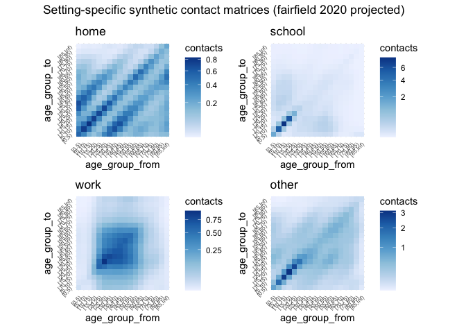
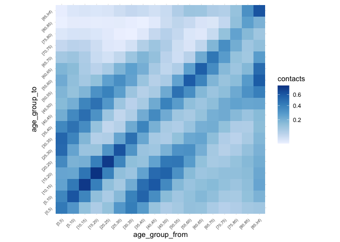
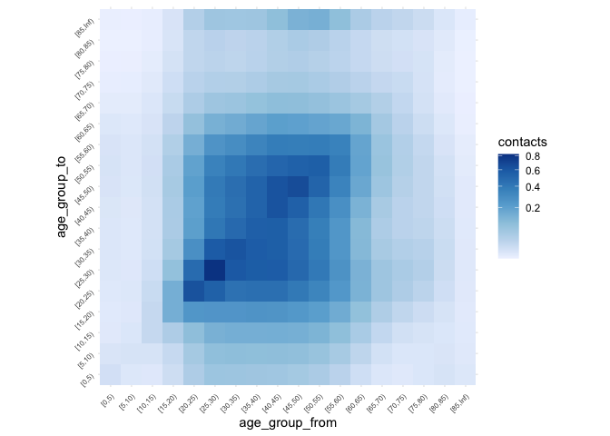
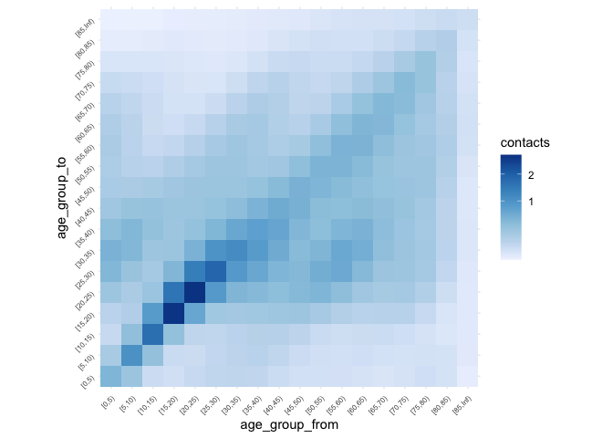
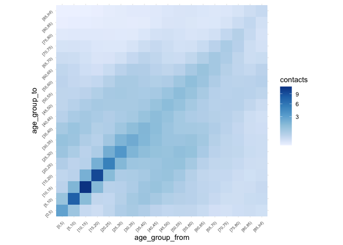
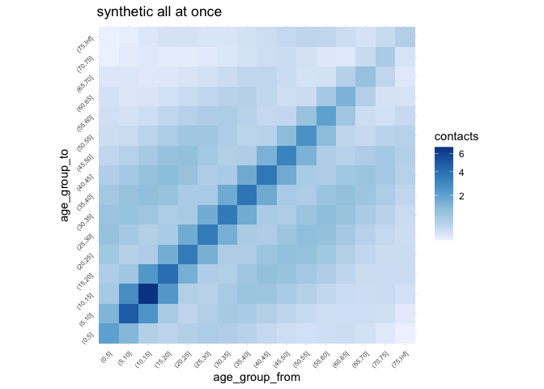

The goal of conmat is to provide methods for producing contact matrices.
Installation
You can install the development version with:
install.packages("conmat", repos = "https://njtierney.r-universe.dev")Or alternatively you can use remotes (although I recommend using the above code)
# install.packages("remotes")
remotes::install_github("njtierney/conmat")Example
We can extract out the ABS age population data using abs_age_lga like so:
library(conmat)
fairfield_age_pop <- abs_age_lga("Fairfield (C)")
fairfield_age_pop
#> # A tibble: 18 × 4
#> lga lower.age.limit year population
#> <chr> <dbl> <dbl> <dbl>
#> 1 Fairfield (C) 0 2020 12261
#> 2 Fairfield (C) 5 2020 13093
#> 3 Fairfield (C) 10 2020 13602
#> 4 Fairfield (C) 15 2020 14323
#> 5 Fairfield (C) 20 2020 15932
#> 6 Fairfield (C) 25 2020 16190
#> 7 Fairfield (C) 30 2020 14134
#> 8 Fairfield (C) 35 2020 13034
#> 9 Fairfield (C) 40 2020 12217
#> 10 Fairfield (C) 45 2020 13449
#> 11 Fairfield (C) 50 2020 13419
#> 12 Fairfield (C) 55 2020 13652
#> 13 Fairfield (C) 60 2020 12907
#> 14 Fairfield (C) 65 2020 10541
#> 15 Fairfield (C) 70 2020 8227
#> 16 Fairfield (C) 75 2020 5598
#> 17 Fairfield (C) 80 2020 4006
#> 18 Fairfield (C) 85 2020 4240Note that you need to use the exact LGA name - you can look up LGA names in the data set abs_lga_lookup:
abs_lga_lookup
#> # A tibble: 545 × 3
#> state lga_code lga
#> <chr> <dbl> <chr>
#> 1 NSW 10050 Albury (C)
#> 2 NSW 10180 Armidale Regional (A)
#> 3 NSW 10250 Ballina (A)
#> 4 NSW 10300 Balranald (A)
#> 5 NSW 10470 Bathurst Regional (A)
#> 6 NSW 10500 Bayside (A)
#> 7 NSW 10550 Bega Valley (A)
#> 8 NSW 10600 Bellingen (A)
#> 9 NSW 10650 Berrigan (A)
#> 10 NSW 10750 Blacktown (C)
#> # … with 535 more rowsFirst we want to fit the model to the polymod data
set.seed(2021-09-24)
polymod_contact_data <- get_polymod_setting_data()
polymod_survey_data <- get_polymod_population()
setting_models <- fit_setting_contacts(
contact_data_list = polymod_contact_data,
population = polymod_survey_data
)Then we take this model and extrapolate to the fairfield data:
set.seed(2021-09-24)
synthetic_settings_5y_fairfield <- predict_setting_contacts(
population = fairfield_age_pop,
contact_model = setting_models,
age_breaks = c(seq(0, 85, by = 5), Inf)
)
# this code is erroring for the moment - something to do with rendering a large plot I think.
plot_setting_matrices(
synthetic_settings_5y_fairfield,
title = "Setting-specific synthetic contact matrices (fairfield 2020 projected)"
)
set.seed(2021-09-24)
plot_matrix(synthetic_settings_5y_fairfield$home)
plot_matrix(synthetic_settings_5y_fairfield$work)
plot_matrix(synthetic_settings_5y_fairfield$school)
plot_matrix(synthetic_settings_5y_fairfield$other)
plot_matrix(synthetic_settings_5y_fairfield$all)
# build synthetic age-structured contact matrices with GAMs
# analysis of polymod data
# set age breaks
age_breaks_5y <- c(seq(0, 75, by = 5), Inf)
age_breaks_1y <- c(seq(0, 100, by = 1), Inf)
# fit a single overall contact model to polymod
m_all <- fit_single_contact_model(
contact_data = get_polymod_contact_data("all"),
population = get_polymod_population()
)
m_all
#>
#> Family: poisson
#> Link function: log
#>
#> Formula:
#> contacts ~ offset(log(pop_age_to)) + s(age_to) + s(age_from) +
#> s(abs(age_from - age_to)) + s(abs(age_from - age_to), age_from) +
#> school_probability + work_probability
#>
#> Estimated degrees of freedom:
#> 8.77 8.98 8.67 26.93 total = 56.35
#>
#> fREML score: 21336.64
# predict contacts at 1y and 5y resolutions for inspection
synthetic_all_5y <- predict_contacts(
model = m_all,
population = get_polymod_population(),
age_breaks = age_breaks_5y
) %>%
predictions_to_matrix()
synthetic_all_5y
#> [0,5) [5,10) [10,15) [15,20) [20,25) [25,30) [30,35)
#> [0,5) 2.2961778 0.9841760 0.2665967 0.2436655 0.4263069 0.7686328 1.0457418
#> [5,10) 0.9175304 5.9371406 1.6621643 0.3355184 0.3035360 0.5921631 1.1227155
#> [10,15) 0.1560111 1.4031858 8.6739195 1.8637429 0.3277827 0.3409390 0.6454148
#> [15,20) 0.1523118 0.2469108 1.5818971 7.7827790 1.7205829 0.4877014 0.5113751
#> [20,25) 0.3093607 0.2952594 0.3694681 1.3860727 4.9504574 1.7040590 0.8051970
#> [25,30) 0.4394524 0.5026583 0.5100119 0.5911413 1.2744947 2.7749975 1.6327936
#> [30,35) 0.4783429 0.6128759 0.6709726 0.7279402 0.8997542 1.4076367 2.0034893
#> [35,40) 0.4707160 0.7161894 0.7818917 0.7754519 0.8982554 1.2761030 1.8279342
#> [40,45) 0.3585837 0.6616827 0.8958419 0.8786357 0.8075277 0.9583238 1.4669700
#> [45,50) 0.2694747 0.4548469 0.7697744 1.0041722 0.9687434 0.8558886 0.9518309
#> [50,55) 0.2688993 0.3315254 0.4888495 0.7979599 1.1016920 1.1536309 1.0257817
#> [55,60) 0.2800674 0.3418540 0.3564905 0.4629270 0.7351270 1.0983144 1.2677984
#> [60,65) 0.2047405 0.3530780 0.3664221 0.3391652 0.3958605 0.5933897 0.9004819
#> [65,70) 0.1192766 0.2500690 0.3431780 0.3416790 0.3228740 0.3627953 0.4976479
#> [70,75) 0.1102092 0.1645586 0.2203824 0.2729754 0.3113342 0.3471806 0.4138156
#> [75,Inf) 0.2734595 0.3064248 0.2138374 0.1389023 0.1280255 0.1656627 0.2357608
#> [35,40) [40,45) [45,50) [50,55) [55,60) [60,65) [65,70)
#> [0,5) 0.9659428 0.6537108 0.4503856 0.3820578 0.3796647 0.3429701 0.2809982
#> [5,10) 1.3931823 1.0130246 0.6007397 0.3900379 0.2974886 0.2380190 0.2138697
#> [10,15) 1.1082553 1.1105445 0.7483189 0.4427546 0.2667620 0.1768716 0.1561535
#> [15,20) 0.8083659 1.0268667 0.9122820 0.6187293 0.3494482 0.1847988 0.1349457
#> [20,25) 0.8192829 0.9264065 0.9437859 0.7962770 0.5202391 0.2619769 0.1491834
#> [25,30) 1.1249652 0.9842276 0.9420020 0.8757729 0.6833611 0.3932824 0.2097393
#> [30,35) 1.6605228 1.1779630 0.9493098 0.8715278 0.7754303 0.5487952 0.3392793
#> [35,40) 2.0005634 1.5807540 1.0701711 0.7972073 0.6849897 0.5760937 0.4745477
#> [40,45) 2.0549419 1.9468994 1.4015427 0.8618834 0.5496203 0.4078352 0.4039658
#> [45,50) 1.3628629 1.7679749 1.7637476 1.2197031 0.6354214 0.3185311 0.2542919
#> [50,55) 0.9907296 1.1317668 1.4619191 1.5649061 1.0302608 0.4507559 0.2377263
#> [55,60) 1.1376829 0.9357412 1.0062316 1.3095410 1.3229469 0.7646212 0.3689179
#> [60,65) 1.0619998 0.9020357 0.7833675 0.8988580 1.1057568 0.9891921 0.5885683
#> [65,70) 0.6801188 0.7100285 0.6374689 0.6220742 0.7079672 0.8097389 0.8743001
#> [70,75) 0.5222652 0.5901288 0.5864612 0.5332604 0.4797534 0.4706634 0.6720563
#> [75,Inf) 0.3193049 0.3745879 0.4244675 0.4438412 0.3674579 0.2390325 0.2078713
#> [70,75) [75,Inf)
#> [0,5) 0.16128692 0.1245205
#> [5,10) 0.14870550 0.1298568
#> [10,15) 0.12691810 0.1459016
#> [15,20) 0.10982848 0.1812284
#> [20,25) 0.09786404 0.1830864
#> [25,30) 0.10476741 0.1656551
#> [30,35) 0.15995892 0.1832448
#> [35,40) 0.27327554 0.2746340
#> [40,45) 0.33234102 0.4275889
#> [45,50) 0.24550335 0.5154186
#> [50,55) 0.17222193 0.4693506
#> [55,60) 0.18382065 0.3847631
#> [60,65) 0.26047764 0.3421757
#> [65,70) 0.42438380 0.3736197
#> [70,75) 0.82086074 0.5982686
#> [75,Inf) 0.29256809 1.2298811
set.seed(2021-09-08)
# predict contacts at 1y and 5y resolutions for inspection
synthetic_all_5y <- predict_contacts(
model = m_all,
population = get_polymod_population(),
age_breaks = age_breaks_5y
) %>%
predictions_to_matrix()
synthetic_all_5y
#> [0,5) [5,10) [10,15) [15,20) [20,25) [25,30) [30,35)
#> [0,5) 2.2961778 0.9841760 0.2665967 0.2436655 0.4263069 0.7686328 1.0457418
#> [5,10) 0.9175304 5.9371406 1.6621643 0.3355184 0.3035360 0.5921631 1.1227155
#> [10,15) 0.1560111 1.4031858 8.6739195 1.8637429 0.3277827 0.3409390 0.6454148
#> [15,20) 0.1523118 0.2469108 1.5818971 7.7827790 1.7205829 0.4877014 0.5113751
#> [20,25) 0.3093607 0.2952594 0.3694681 1.3860727 4.9504574 1.7040590 0.8051970
#> [25,30) 0.4394524 0.5026583 0.5100119 0.5911413 1.2744947 2.7749975 1.6327936
#> [30,35) 0.4783429 0.6128759 0.6709726 0.7279402 0.8997542 1.4076367 2.0034893
#> [35,40) 0.4707160 0.7161894 0.7818917 0.7754519 0.8982554 1.2761030 1.8279342
#> [40,45) 0.3585837 0.6616827 0.8958419 0.8786357 0.8075277 0.9583238 1.4669700
#> [45,50) 0.2694747 0.4548469 0.7697744 1.0041722 0.9687434 0.8558886 0.9518309
#> [50,55) 0.2688993 0.3315254 0.4888495 0.7979599 1.1016920 1.1536309 1.0257817
#> [55,60) 0.2800674 0.3418540 0.3564905 0.4629270 0.7351270 1.0983144 1.2677984
#> [60,65) 0.2047405 0.3530780 0.3664221 0.3391652 0.3958605 0.5933897 0.9004819
#> [65,70) 0.1192766 0.2500690 0.3431780 0.3416790 0.3228740 0.3627953 0.4976479
#> [70,75) 0.1102092 0.1645586 0.2203824 0.2729754 0.3113342 0.3471806 0.4138156
#> [75,Inf) 0.2734595 0.3064248 0.2138374 0.1389023 0.1280255 0.1656627 0.2357608
#> [35,40) [40,45) [45,50) [50,55) [55,60) [60,65) [65,70)
#> [0,5) 0.9659428 0.6537108 0.4503856 0.3820578 0.3796647 0.3429701 0.2809982
#> [5,10) 1.3931823 1.0130246 0.6007397 0.3900379 0.2974886 0.2380190 0.2138697
#> [10,15) 1.1082553 1.1105445 0.7483189 0.4427546 0.2667620 0.1768716 0.1561535
#> [15,20) 0.8083659 1.0268667 0.9122820 0.6187293 0.3494482 0.1847988 0.1349457
#> [20,25) 0.8192829 0.9264065 0.9437859 0.7962770 0.5202391 0.2619769 0.1491834
#> [25,30) 1.1249652 0.9842276 0.9420020 0.8757729 0.6833611 0.3932824 0.2097393
#> [30,35) 1.6605228 1.1779630 0.9493098 0.8715278 0.7754303 0.5487952 0.3392793
#> [35,40) 2.0005634 1.5807540 1.0701711 0.7972073 0.6849897 0.5760937 0.4745477
#> [40,45) 2.0549419 1.9468994 1.4015427 0.8618834 0.5496203 0.4078352 0.4039658
#> [45,50) 1.3628629 1.7679749 1.7637476 1.2197031 0.6354214 0.3185311 0.2542919
#> [50,55) 0.9907296 1.1317668 1.4619191 1.5649061 1.0302608 0.4507559 0.2377263
#> [55,60) 1.1376829 0.9357412 1.0062316 1.3095410 1.3229469 0.7646212 0.3689179
#> [60,65) 1.0619998 0.9020357 0.7833675 0.8988580 1.1057568 0.9891921 0.5885683
#> [65,70) 0.6801188 0.7100285 0.6374689 0.6220742 0.7079672 0.8097389 0.8743001
#> [70,75) 0.5222652 0.5901288 0.5864612 0.5332604 0.4797534 0.4706634 0.6720563
#> [75,Inf) 0.3193049 0.3745879 0.4244675 0.4438412 0.3674579 0.2390325 0.2078713
#> [70,75) [75,Inf)
#> [0,5) 0.16128692 0.1245205
#> [5,10) 0.14870550 0.1298568
#> [10,15) 0.12691810 0.1459016
#> [15,20) 0.10982848 0.1812284
#> [20,25) 0.09786404 0.1830864
#> [25,30) 0.10476741 0.1656551
#> [30,35) 0.15995892 0.1832448
#> [35,40) 0.27327554 0.2746340
#> [40,45) 0.33234102 0.4275889
#> [45,50) 0.24550335 0.5154186
#> [50,55) 0.17222193 0.4693506
#> [55,60) 0.18382065 0.3847631
#> [60,65) 0.26047764 0.3421757
#> [65,70) 0.42438380 0.3736197
#> [70,75) 0.82086074 0.5982686
#> [75,Inf) 0.29256809 1.2298811
library(ggplot2)
plot_matrix(synthetic_all_5y) +
ggtitle("synthetic all at once")
Speeding up computation with future
conmat now supports parallelisation, which is useful in a couple of contexts with the model fitting, here is an example:
We set the future plan, saying multisession, with 4 workers.
Then we run the code as normal:
polymod_setting_data <- get_polymod_setting_data()
polymod_population <- get_polymod_population()
contact_model <- fit_setting_contacts(
contact_data_list = polymod_setting_data,
population = polymod_population
)
contact_model_pred <- predict_setting_contacts(
population = polymod_population,
contact_model = contact_model,
age_breaks = c(seq(0, 75, by = 5), Inf)
)Notably this is about 3 times faster than without using that plan.
Data sources
This package provides data for use in calculating contact matrices.
These data are still being cleaned and processed, but their current forms are shown below:
eyre_transmission_probabilities
eyre_transmission_probabilities
#> # A tibble: 40,804 × 6
#> setting case_age contact_age case_age_5y contact_age_5y probability
#> <chr> <int> <int> <chr> <chr> <dbl>
#> 1 household 0 0 0-4 0-4 0.195
#> 2 household 0 1 0-4 0-4 0.195
#> 3 household 0 2 0-4 0-4 0.195
#> 4 household 0 3 0-4 0-4 0.195
#> 5 household 0 4 0-4 0-4 0.195
#> 6 household 0 5 0-4 5-9 0.196
#> 7 household 0 6 0-4 5-9 0.198
#> 8 household 0 7 0-4 5-9 0.198
#> 9 household 0 8 0-4 5-9 0.199
#> 10 household 0 9 0-4 5-9 0.201
#> # … with 40,794 more rows
library(ggplot2)
library(stringr)
library(dplyr)
#>
#> Attaching package: 'dplyr'
#> The following objects are masked from 'package:stats':
#>
#> filter, lag
#> The following objects are masked from 'package:base':
#>
#> intersect, setdiff, setequal, union
eyre_transmission_probabilities %>%
group_by(
setting,
case_age_5y,
contact_age_5y
) %>%
summarise(
across(
probability,
mean
),
.groups = "drop"
) %>%
rename(
case_age = case_age_5y,
contact_age = contact_age_5y
) %>%
mutate(
across(
ends_with("age"),
~ factor(.x,
levels = str_sort(
unique(.x),
numeric = TRUE
)
)
)
) %>%
ggplot(
aes(
x = case_age,
y = contact_age,
fill = probability
)
) +
facet_wrap(~setting) +
geom_tile() +
scale_fill_viridis_c() +
coord_fixed() +
theme_minimal() +
theme(
axis.text = element_text(angle = 45, hjust = 1)
)
abs_education_state
abs_education_state
#> # A tibble: 4,194 × 5
#> year state aboriginal_and_torres_strait_islander_status age n_full_and_part…
#> <dbl> <chr> <chr> <dbl> <dbl>
#> 1 2006 ACT Aboriginal and Torres Strait Islander 4 5
#> 2 2006 ACT Non-Indigenous 4 109
#> 3 2006 NSW Aboriginal and Torres Strait Islander 4 104
#> 4 2006 NSW Non-Indigenous 4 1870
#> 5 2006 NT Aboriginal and Torres Strait Islander 4 102
#> 6 2006 NT Non-Indigenous 4 63
#> 7 2006 QLD Aboriginal and Torres Strait Islander 4 37
#> 8 2006 QLD Non-Indigenous 4 740
#> 9 2006 SA Aboriginal and Torres Strait Islander 4 42
#> 10 2006 SA Non-Indigenous 4 1023
#> # … with 4,184 more rowsabs_education_state_2020
abs_education_state_2020
#> # A tibble: 808 × 6
#> year state age population population_interpolated prop
#> <dbl> <chr> <dbl> <dbl> <dbl> <dbl>
#> 1 2020 ACT 0 0 5569. 0
#> 2 2020 ACT 1 0 5702. 0
#> 3 2020 ACT 2 0 5781. 0
#> 4 2020 ACT 3 0 5814. 0
#> 5 2020 ACT 4 0 5809. 0
#> 6 2020 ACT 5 4558 5772. 0.790
#> 7 2020 ACT 6 6161 5710. 1.08
#> 8 2020 ACT 7 6163 5623. 1.10
#> 9 2020 ACT 8 5881 5510. 1.07
#> 10 2020 ACT 9 5921 5370. 1.10
#> # … with 798 more rowsabs_employ_age_lga
abs_employ_age_lga
#> # A tibble: 5,600 × 8
#> year state lga age_group total_employed total_unemployed total_labour_fo…
#> <dbl> <chr> <chr> <fct> <dbl> <dbl> <dbl>
#> 1 2016 NSW Albur… 15-19 1527 300 1830
#> 2 2016 NSW Armid… 15-19 838 217 1055
#> 3 2016 NSW Balli… 15-19 1064 185 1255
#> 4 2016 NSW Balra… 15-19 41 9 46
#> 5 2016 NSW Bathu… 15-19 1103 241 1341
#> 6 2016 NSW Bega … 15-19 801 97 897
#> 7 2016 NSW Belli… 15-19 241 42 281
#> 8 2016 NSW Berri… 15-19 168 16 181
#> 9 2016 NSW Black… 15-19 7534 2136 9670
#> 10 2016 NSW Bland… 15-19 124 14 140
#> # … with 5,590 more rows, and 1 more variable: total <dbl>abs_household_lga
abs_household_lga
#> # A tibble: 4,968 × 5
#> year state lga n_persons_usually_resident n_households
#> <dbl> <chr> <chr> <chr> <dbl>
#> 1 2016 NSW Albury (C) total 19495
#> 2 2016 NSW Albury (C) 1 6020
#> 3 2016 NSW Albury (C) 2 6738
#> 4 2016 NSW Albury (C) 3 2740
#> 5 2016 NSW Albury (C) 4 2541
#> 6 2016 NSW Albury (C) 5 1041
#> 7 2016 NSW Albury (C) 6 311
#> 8 2016 NSW Albury (C) 7 56
#> 9 2016 NSW Albury (C) 8+ 42
#> 10 2016 NSW Armidale Regional (A) total 10276
#> # … with 4,958 more rowsabs_pop_age_lga_2016
abs_pop_age_lga_2016
#> # A tibble: 9,792 × 5
#> year state lga age_group population
#> <dbl> <chr> <chr> <fct> <dbl>
#> 1 2016 ACT Unincorporated ACT 0-4 28054
#> 2 2016 ACT Unincorporated ACT 5-9 25767
#> 3 2016 ACT Unincorporated ACT 10-14 22170
#> 4 2016 ACT Unincorporated ACT 15-19 24906
#> 5 2016 ACT Unincorporated ACT 20-24 32615
#> 6 2016 ACT Unincorporated ACT 25-29 34243
#> 7 2016 ACT Unincorporated ACT 30-34 34574
#> 8 2016 ACT Unincorporated ACT 35-39 30340
#> 9 2016 ACT Unincorporated ACT 40-44 28387
#> 10 2016 ACT Unincorporated ACT 45-49 26431
#> # … with 9,782 more rowsabs_pop_age_lga_2020
abs_pop_age_lga_2020
#> # A tibble: 9,774 × 5
#> year state lga age_group population
#> <dbl> <chr> <chr> <fct> <dbl>
#> 1 2020 ACT Unincorporated ACT 0-4 27861
#> 2 2020 ACT Unincorporated ACT 5-9 28871
#> 3 2020 ACT Unincorporated ACT 10-14 26015
#> 4 2020 ACT Unincorporated ACT 15-19 23867
#> 5 2020 ACT Unincorporated ACT 20-24 32626
#> 6 2020 ACT Unincorporated ACT 25-29 33992
#> 7 2020 ACT Unincorporated ACT 30-34 35734
#> 8 2020 ACT Unincorporated ACT 35-39 35354
#> 9 2020 ACT Unincorporated ACT 40-44 30155
#> 10 2020 ACT Unincorporated ACT 45-49 29103
#> # … with 9,764 more rowsabs_state_age
abs_state_age
#> # A tibble: 168 × 3
#> state age_group population
#> <chr> <fct> <dbl>
#> 1 NSW 0-4 495060
#> 2 VIC 0-4 401992
#> 3 QLD 0-4 314592
#> 4 SA 0-4 98400
#> 5 WA 0-4 171531
#> 6 TAS 0-4 29258
#> 7 NT 0-4 17766
#> 8 ACT 0-4 27846
#> 9 NSW 5-9 512687
#> 10 VIC 5-9 416633
#> # … with 158 more rowsCode of Conduct
Please note that the conmat project is released with a Contributor Code of Conduct. By contributing to this project, you agree to abide by its terms.